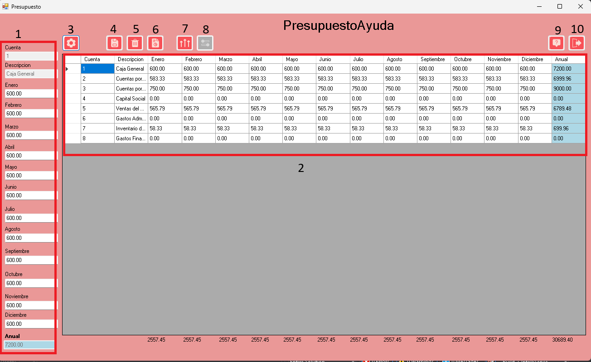

Ayuda Presupuesto
- 1.Campos: Espacios donde se ingresan los datos del presupuesto.
- 2.DataGridView: Permite visualizar los datos del presupuesto.
- 3.Botón de Opciones: Abre el formulario de opciones.
- 4.Botón Guardar: Guarda los cambios realizados en el presupuesto.
- 5.Botón Eliminar: Elimina el presupuesto actualmente cargado.
- 6.Botón Reporte: Genera un reporte del presupuesto seleccionado.
- 7.Botón Incrementar: Abre el formulario para realizar incrementos al presupuesto.
- 8.Botón Ajustar: Se activa solo en modo anual y distribuye el presupuesto entre los 12 meses.
- 9.Botón Ayuda: Muestra la ayuda relacionada con el modelo de presupuesto.
- 10.Botón Salir: Cierra la ventana del presupuesto.